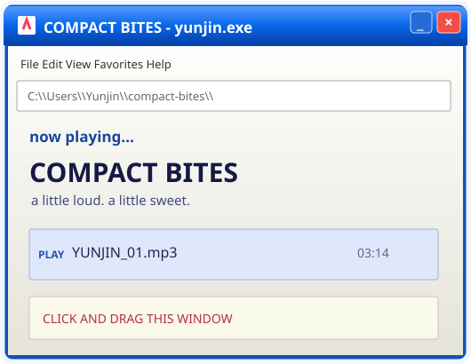

HUH YUNJIN / VISUAL STUDY 001
2003 → FOREVER ✳ FAN POSTER
COMPACT
BITES!
100% YUNJIN ENERGY
Sweet, sharp, unapologetic.
Move the cursor. Move the windows.
SPECIAL EDITION • 01 / 05

↗ DRAG TO REMIX THE SCENE